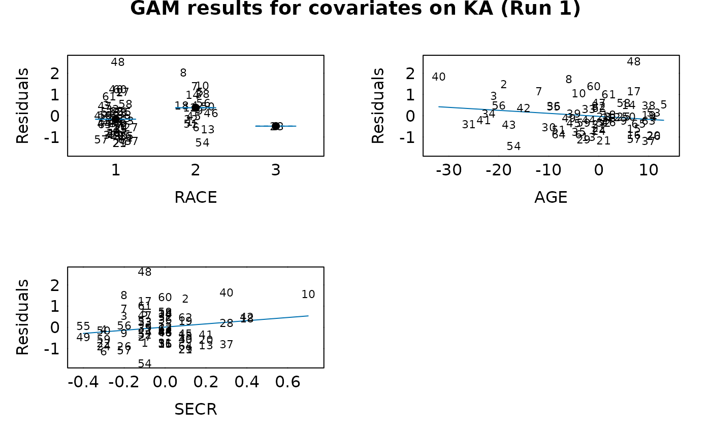
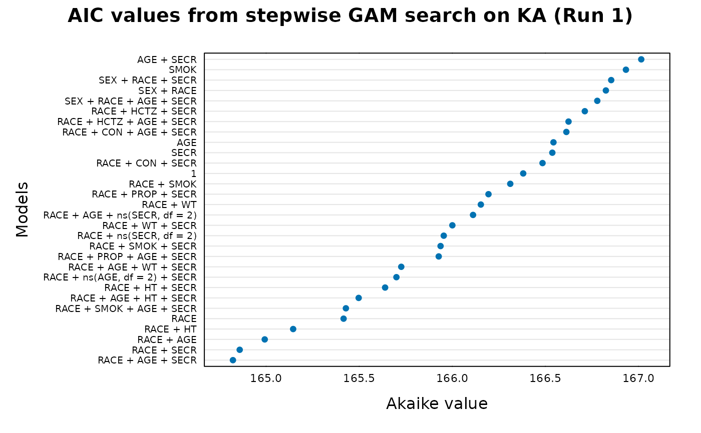

Function takes an Xpose object and performs a generalized additive model (GAM) stepwise search for influential covariates on a single model parameter.
Usage
xpose.gam(
object,
parnam = xvardef("parms", object)[1],
covnams = xvardef("covariates", object),
trace = TRUE,
scope = NULL,
disp = object@Prefs@Gam.prefs$disp,
start.mod = object@Prefs@Gam.prefs$start.mod,
family = "gaussian",
wts.data = object@Data.firstonly,
wts.col = NULL,
steppit = object@Prefs@Gam.prefs$steppit,
subset = xsubset(object),
onlyfirst = object@Prefs@Gam.prefs$onlyfirst,
medianNorm = object@Prefs@Gam.prefs$medianNorm,
nmods = object@Prefs@Gam.prefs$nmods,
smoother1 = object@Prefs@Gam.prefs$smoother1,
smoother2 = object@Prefs@Gam.prefs$smoother2,
smoother3 = object@Prefs@Gam.prefs$smoother3,
smoother4 = object@Prefs@Gam.prefs$smoother4,
arg1 = object@Prefs@Gam.prefs$arg1,
arg2 = object@Prefs@Gam.prefs$arg2,
arg3 = object@Prefs@Gam.prefs$arg3,
arg4 = object@Prefs@Gam.prefs$arg4,
excl1 = object@Prefs@Gam.prefs$excl1,
excl2 = object@Prefs@Gam.prefs$excl2,
excl3 = object@Prefs@Gam.prefs$excl3,
excl4 = object@Prefs@Gam.prefs$excl4,
extra = object@Prefs@Gam.prefs$extra,
...
)Arguments
- object
An xpose.data object.
- parnam
ONE (and only one) model parameter name.
- covnams
Covariate names to test on parameter.
- trace
TRUE if you want GAM output to screen.
- scope
Scope of the GAM search.
- disp
If dispersion should be used in the GAM object.
- start.mod
Starting model.
- family
Assumption for the parameter distribution.
- wts.data
Weights on the least squares fitting of parameter vs. covariate. Often one can use the variances of the individual parameter values as weights. This data frame must have column with name ID and any subset variable as well as the variable defined by the
wts.col.- wts.col
Which column in the
wts.datato use.- steppit
TRUE for stepwise search, false for no search.
- subset
Subset on data.
- onlyfirst
TRUE if only the first row of each individual's data is to be used.
- medianNorm
Normalize to the median of parameter and covariates.
- nmods
Number of models to examine.
- smoother1
Smoother for each model.
- smoother2
Smoother for each model.
- smoother3
Smoother for each model.
- smoother4
Smoother for each model.
- arg1
Argument for model 1.
- arg2
Argument for model 2.
- arg3
Argument for model 3.
- arg4
Argument for model 4.
- excl1
Covariate exclusion from model 1.
- excl2
Covariate exclusion from model 2.
- excl3
Covariate exclusion from model 3.
- excl4
Covariate exclusion from model 4.
- extra
Extra exclusion criteria.
- ...
Used to pass arguments to more basic functions.
Value
Returned is a step.Gam object. In this object
the step-wise-selected model is returned, with up to two additional
components. There is an "anova" component
corresponding to the steps taken in the search, as well as a
"keep" component if the "keep=" argument was supplied in the call.
See also
step.gam
Other GAM functions:
GAM_summary_and_plot,
xp.get.disp(),
xp.scope3(),
xpose.bootgam(),
xpose4-package
Examples
## Run a GAM using the example xpose database
gam_ka <- xpose.gam(simpraz.xpdb, parnam="KA")
#> Start: KA ~ 1; AIC= 166.381
#> Step:1 KA ~ RACE ; AIC= 165.4162
#> Step:2 KA ~ RACE + SECR ; AIC= 164.8582
#> Step:3 KA ~ RACE + AGE + SECR ; AIC= 164.8219
## Summarize GAM
xp.summary(gam_ka)
#>
#> SUMMARY
#> Call: gam(formula = KA ~ RACE + AGE + SECR, data = gamdata, trace = FALSE)
#> Deviance Residuals:
#> Min 1Q Median 3Q Max
#> -1.63145 -0.65128 -0.05558 0.41369 2.68692
#>
#> (Dispersion Parameter for gaussian family taken to be 0.6916)
#>
#> Null Deviance: 47.3804 on 63 degrees of freedom
#> Residual Deviance: 40.8068 on 59 degrees of freedom
#> AIC: 164.8219
#>
#> Number of Local Scoring Iterations: 2
#>
#> Anova for Parametric Effects
#> Df Sum Sq Mean Sq F value Pr(>F)
#> RACE 2 3.537 1.76829 2.5567 0.08613 .
#> AGE 1 1.629 1.62924 2.3556 0.13018
#> SECR 1 1.408 1.40786 2.0355 0.15893
#> Residuals 59 40.807 0.69164
#> ---
#> Signif. codes: 0 ‘***’ 0.001 ‘**’ 0.01 ‘*’ 0.05 ‘.’ 0.1 ‘ ’ 1
#>
#>
#> PATH TO FINAL MODEL
#> Stepwise Model Path
#> Analysis of Deviance Table
#>
#> Initial Model:
#> KA ~ 1
#>
#> Final Model:
#> KA ~ RACE + AGE + SECR
#>
#> Scale: 0.7520703
#>
#> From To Df Deviance Resid. Df Resid. Dev AIC
#> 1 <start> 63 47.38043 166.3810
#> 2 RACE -2 -3.536572 61 43.84386 165.4162
#> 3 SECR -1 -1.717840 60 42.12602 164.8582
#> 4 AGE -1 -1.319258 59 40.80676 164.8219
#>
#> COEFFICIENTS
#> (Intercept) RACE2 RACE3 AGE SECR
#> -0.08272054 0.53724306 -0.32761296 -0.01411650 0.74934090
#>
#> PRERUN RESULTS
#> Dispersion:
#>
#> DATA
#> Subset expression:
#> Only first value of covariate considered
#> for each individual: TRUE
#> Covariates normalized to median: TRUE
## GAM residuals of base model vs. covariates
xp.plot(gam_ka)

## An Akaike plot of the results
xp.akaike.plot(gam_ka)

## Studentized residuals
xp.ind.stud.res(gam_ka)

## Individual influence on GAM fit
xp.ind.inf.fit(gam_ka)
#>
#> For ID 23:
#> Cook distance is Inf
#> Leverage is Inf
#> => the point is not included in the plot
## Individual influence on GAM terms
xp.ind.inf.terms(gam_ka)
## Individual parameters to GAM fit
xp.cook(gam_ka)
#> (Intercept) RACE2 RACE3 AGE SECR
#> 2 NaN 0.4069038 0.4069038 6.384659 0.15108146
#> 12 NaN 0.6632264 0.6632264 6.166696 0.13341637
#> 23 NaN 0.5152555 0.5152555 5.976245 0.14359840
#> 34 NaN 0.4083608 0.4083608 5.526933 0.15078901
#> 44 NaN 0.4491550 0.4491550 4.878261 0.14571869
#> 54 NaN 0.4336340 0.4336340 6.669965 0.14805262
#> 64 NaN 0.3461857 0.3461857 4.527164 0.15895947
#> 72 NaN 0.3522048 0.3522048 3.950764 0.15794212
#> 82 NaN 0.4026346 0.4026346 5.765467 0.15160252
#> 91 NaN 0.4588266 0.4588266 4.012911 0.14621651
#> 97 NaN 0.4048793 0.4048793 5.617073 0.15128375
#> 107 NaN 0.3911857 0.3911857 6.913509 0.15265331
#> 118 NaN 0.4255037 0.4255037 4.985381 0.14871870
#> 129 NaN 0.2775285 0.2775285 5.384752 0.16549514
#> 140 NaN 0.2162661 0.2162661 5.215029 0.17375389
#> 151 NaN 0.8291616 0.8291616 6.405338 0.11860555
#> 162 NaN 0.4094348 0.4094348 5.503623 0.15077884
#> 173 NaN 0.4687459 0.4687459 5.750293 0.14515016
#> 184 NaN 0.2013301 0.2013301 5.245030 0.17645826
#> 194 NaN 0.1656837 0.1656837 5.095194 0.18085408
#> 204 NaN 0.4118900 0.4118900 6.223995 0.15061385
#> 212 NaN 0.4044946 0.4044946 5.637613 0.15133188
#> 223 NaN 0.2613920 0.2613920 5.230492 0.16681641
#> 234 NaN 0.4215614 0.4215614 5.674149 0.14967349
#> 245 NaN 0.2141738 0.2141738 5.160388 0.17440596
#> 256 NaN 0.3187987 0.3187987 5.435324 0.16015507
#> 267 NaN 0.3931962 0.3931962 5.619256 0.15244641
#> 278 NaN 0.1791398 0.1791398 5.118928 0.17802496
#> 288 NaN 0.2786389 0.2786389 5.355595 0.16394934
#> 299 NaN 0.3020364 0.3020364 5.331388 0.15913854
#> 310 NaN 0.5316421 0.5316421 5.886831 0.14016374
#> 321 NaN 0.4808547 0.4808547 5.806053 0.14449849
#> 332 NaN 0.3755979 0.3755979 5.551405 0.15355223
#> 341 NaN 0.2468930 0.2468930 5.263710 0.16836440
#> 350 NaN 0.4810597 0.4810597 5.803645 0.14479950
#> 361 NaN 0.1363992 0.1363992 5.119674 0.18758251
#> 367 NaN 0.4390024 0.4390024 4.949578 0.14706063
#> 373 NaN 0.4171210 0.4171210 5.667151 0.15017331
#> 382 NaN 0.6554549 0.6554549 6.115453 0.13743260
#> 393 NaN 0.3212037 0.3212037 5.450513 0.15824381
#> 404 NaN 0.4468825 0.4468825 5.703860 0.14773504
#> 411 NaN 0.2944807 0.2944807 5.373341 0.16129232
#> 422 NaN 0.3582801 0.3582801 5.537411 0.15588547
#> 433 NaN 0.4071513 0.4071513 6.098040 0.15089973
#> 438 NaN 0.4004948 0.4004948 5.913169 0.15183038
#> 449 NaN 0.5671897 0.5671897 5.977558 0.13739557
#> 455 NaN 1.4642283 1.4642283 7.298495 0.08745328
#> 468 NaN 0.3706551 0.3706551 5.533304 0.15447763
#> 479 NaN 0.4053951 0.4053951 5.565423 0.15118627
#> 490 NaN 0.4250737 0.4250737 6.548404 0.14867238
#> 500 NaN 0.3402770 0.3402770 5.489249 0.15785681
#> 511 NaN 0.5110472 0.5110472 5.847233 0.14135623
#> 522 NaN 0.5370821 0.5370821 7.805795 0.13603361
#> 533 NaN 0.4734972 0.4734972 5.849134 0.14556442
#> 543 NaN 0.3813159 0.3813159 5.346115 0.15430963
#> 550 NaN 0.1893831 0.1893831 5.069682 0.17774347
#> 561 NaN 0.6178044 0.6178044 6.027150 0.13309655
#> 569 NaN 0.3328130 0.3328130 5.436414 0.15842242
#> 578 NaN 0.8144037 0.8144037 6.370737 0.12069337
#> 589 NaN 0.7148646 0.7148646 6.242226 0.12660672
#> 600 NaN 0.5095002 0.5095002 5.829433 0.14194991
#> 610 NaN 0.3837543 0.3837543 5.596823 0.15345795
#> 620 NaN 0.2205120 0.2205120 5.213856 0.17129241
#> 631 NaN 0.3398401 0.3398401 5.505575 0.15815307